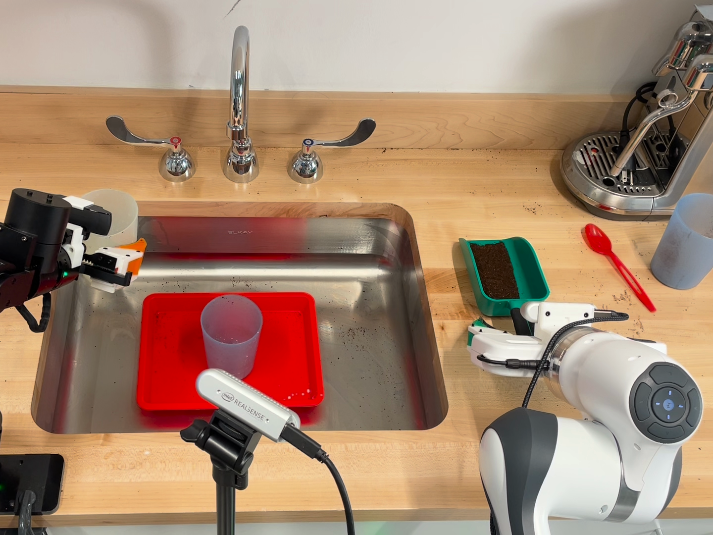
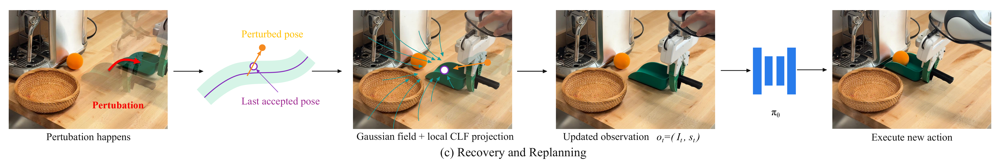

Dynamic System Policy:
Robust Visuomotor Policies via Gaussian Dynamic Fields

Abstract
Robot manipulation policies can fail when external perturbations push the robot away from its expected motion. Dynamic System Policy jointly predicts controller commands and end-effector pose trajectories. Commands drive normal execution, while sampled pose trajectories define local geometric support and provide geometry for a Gaussian recovery field. When intervention is triggered, the executor locks a reference pose and execution phase, recovers toward that reference, and replans from an updated observation. We evaluate recovery in simulation and on real-world manipulation tasks, including decentralized two-robot cooperation.
Why recover before replanning?
A disturbance changes the robot's state. Immediately requesting a new prediction does not necessarily restore successful execution.
Controller commands and realized motion also serve different purposes. Under compliant contact, a commanded target can differ from the pose actually reached. DSP uses commands for execution and predicted motion for geometric feedback.
Method
Paired predictions connect native command execution to geometric recovery.
- 01 / Prediction
Predict commands and motion together
Each policy sample pairs a controller command sequence with a predicted end-effector pose trajectory.
- 02 / Selection
Select a pair and estimate support
Cluster the predicted trajectories and select a representative from the dominant cluster. Retain its paired commands for execution and estimate local geometric support from the cluster.
- 03 / Execution
Execute native commands
Monitor measured motion during execution. Selective intervention combines support departure with excessive motion innovation.

Recovery and Replanning
When recovery begins, the executor fixes a measured reference pose and its execution phase. A geometry-based field guides recovery toward that reference before the policy is queried again.

Interactive Recovery
Synthetic trajectories / Original recovery-field compiler / Position-only kinematics
Preset candidates, not live policy inference. Support departure and excessive motion innovation trigger recovery toward the last accepted pose, with a fixed phase and smooth-tube CLF feedback. Orientation, contact, and gripper dynamics are not simulated.
Real-World Experiments
Representative successful trials and failure cases across four tasks.
Clips retain their presentation speeds; their durations are not task completion times. These are different trials, not a comparison between methods.
Results
Simulation results across three benchmarks and two action representations, followed by recovery and test-time sampling ablations.
Raw Action and Action BSP predict controller commands only. Ours (RAW) and Ours (BSP) jointly predict commands and motion geometry, using discrete sequences and B-spline representations, respectively. Nominal means no external perturbation; perturbed trials use the benchmark's disturbance protocol. Bold values mark the highest observed success in each column.
Simulation Benchmarks
Table I. Success rates (%), evaluated with 5 policy-sampling seeds and 50 episodes per seed per task: 2,500 attempts for LIBERO-10 and 250 for each of Lift and Square. These are evaluation seeds, not independently trained models.
Push distances are medians measured at release in perturbed trials. The configured target is 20 cm, but achieved displacement differs across methods. Results compare complete closed-loop responses to a shared disturbance protocol, not recovery under identical achieved displacements. On Square, 137 Ours (RAW) attempts, zero Raw Action attempts, and four Action BSP attempts did not meet the push-target criterion; all remain in the success-rate denominator.
Recovery Before Replanning
Table II / LIBERO-10 with perturbations / Paired RAW policy / K = 16 candidates per query / 2,500 attempts per strategy.
Direct execution here uses the paired policy (11.84%), not the action-only Raw Action baseline in Table I (9.28%). Immediate replanning and recovery share the same intervention trigger. This evaluates the recovery procedure as a whole.
Test-Time Candidate Selection
Table II / LIBERO-10 without perturbations / Ours (BSP) / Direct execution without recovery.
Increasing K from 1 to 16 improves success by 8.84 percentage points. This comparison measures candidate selection without recovery; it does not isolate the effect of sample count on recovery quality.
Additional Details
Scope and limitations
The support tube is estimated from a finite set of predictions, not a calibrated density region. Returning toward a reference pose does not restore object positions, a lost grasp, or altered contact conditions, and does not guarantee task success.